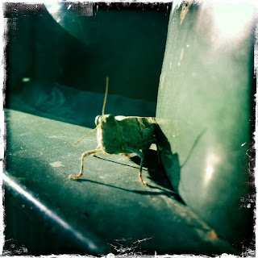

Recovered weblog entry
Order Orthoptera

The infestation of grasshoppers has returned to AZ. Not nearly as bad as those in recent memory; I can remember one particular year when you couldn't walk across the street, nor fill up your gas tank at night without being attacked by these flying pests. Lens: John S
Film: Kodot XGrizzled